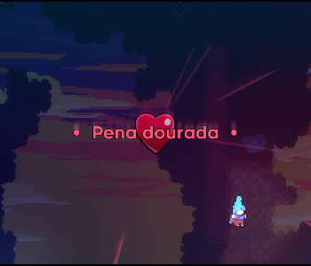

Chapter 4: Golden Ridge
Golden Ridge is the fourth chapter of Celeste. It doesn't show a significant increase in difficulty compared to Chapter 3, but still poses a considerable challenge.
Mechanics
Plot
In Celeste, after overcoming the challenge of the Celestial Resort in Chapter 3, Madeline encounters a Wise Old Woman who advises her to give up in the face of imminent dangers. Ignoring the advice, Madeline presses on. Later, along with her friend Theo, she faces a precarious gondola over a chasm. During a selfie attempt, an aspect of Madeline causes a mishap, resulting in a panic attack. Theo helps Madeline overcome the episode with a breathing exercise, and they continue their journey in a humorous manner.
Dialogues
Collectibles
Crystal Heart:
Chapter 4's Crystal Heart is located at the very beginning of the second sub-chapter, "Shrine." To reach the Crystal Heart, the player must cling to the Guided Platform, then navigate it left to avoid hitting the wall, after which the player should move it back to the right. Once the player lands, the player must go to the right, into the lit-up area. Once one goes into the next room, the player should see a waterfall pouring into a pool of water. The player must then swim towards the bottom right corner and keep swimming to the right until the player reaches a hidden area with a strawberry. The player must then dash into the Smashable Wall to the right to break it, after which the player should reach a tall room. One cannot reach the top normally; the player must crouch on top of the room's idiosyncratic white block until the player disappears. The player is now in the background instead of the foreground, thus allowing one to interact with objects in the background (a trick borrowed from Super Mario Bros. 3, which has a similar block with a similar gimmick). This object interaction allows the player to climb to the top of the screen, where the Crystal Heart (entitled Eye of the storm) is located.
Cassette Tape:
Chapter 4's cassette tape is acquired in the first sub-chapter in a secret room.

Strawberries:
• Golden Strawberry:
Obtained after completing the stage while holding the golden strawberry. Can only be achieved after completing Chapter 8's B-Side.
• Red Strawberry:
Strawberry 1: Red Strawberry:
Strawberry 2: Red Strawberry:
Strawberry 3: Red Strawberry with Wings:
Strawberry 4: Red Strawberry:
Strawberry 5: Red Strawberry:
Sub-chapters
Golden Ridge has 4 sub-chapters:
Start
Shrine

Old Trail
Cliff Face